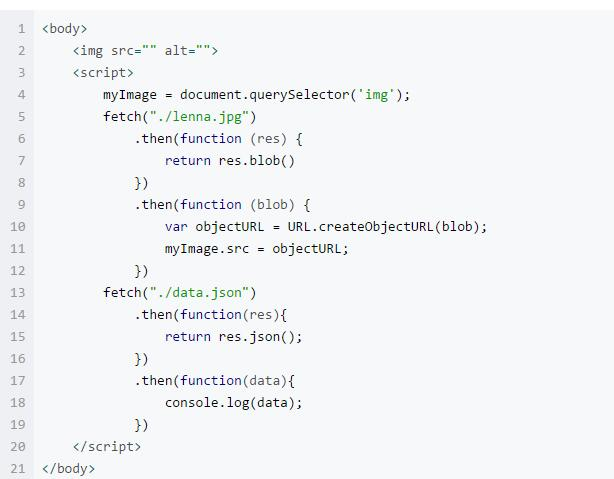

XMLHttpRequest对象的常用方法和属性
常用方法：
open(method,url,asyncl):用于创建一个新的Http请求，并制定此请求的
方法、URL、是否异步提交及验证信息true或false。
send(String):发送请求到服务器。
注意：String仅用于post方法，get方法为空或null
abort();取消 当前请求。
setRequestHeader():单独指定请求某个Http头。
getResponseHeader():从响应中获取指定的Http头。
getAllResponseHeaders():获取响应的所有Http头。
常用属性：
readyState：返回请求的当前状态。（readyState常用值是：0表示未初始化，
1表示初始化，2表示发送数据，3表示数据传送中，4表示数据接收完毕）
status：返回当前请求的Http状态码。（200表示正确返回，404表示找不到访问对象）
responseText：以文本形式获取响应值。
reponseXML：以XML形式获取响应值，并且解析成DOM对象返回。
statusText：返回请求的响应行代码。
onreadystatechange:设置回调函数。
Ajax的使用步骤：
1.创建XMLHttpRequest对象，通过window.XMLHttpRequest的返回值判断
XMLHttpRequest对象的方式。
2.设置回调函数，通过onreadystatechange属性设置回调函数，函数需要自定义。
3.初始化XMLHttpRequest组件。通过open()方法创建一个设置发送方式和请求路径
的Http请求。
4.发送请求
FetchAPI 的使用
